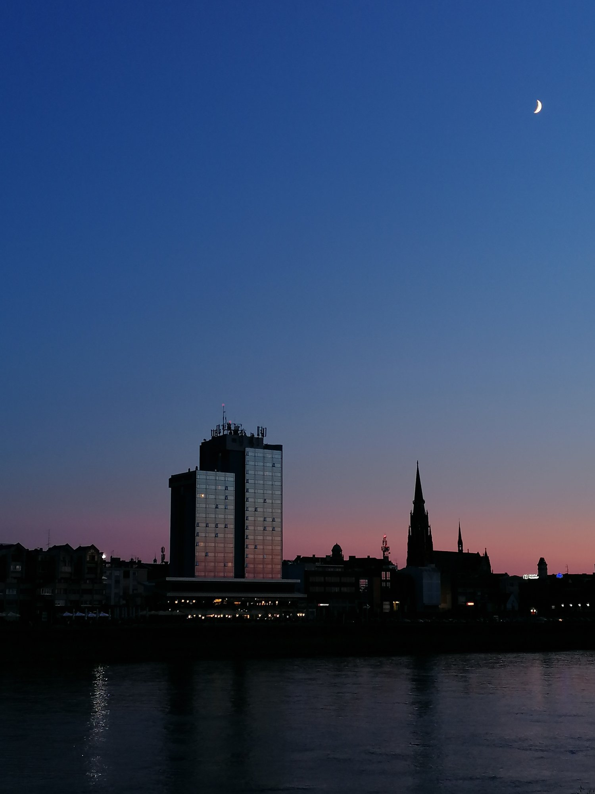
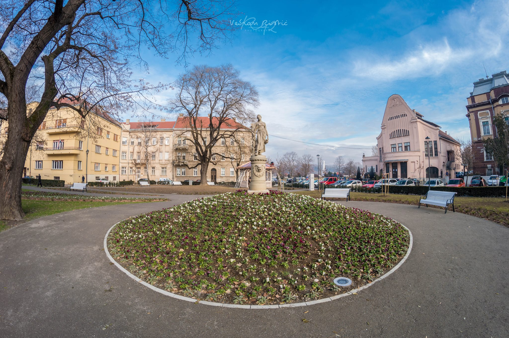
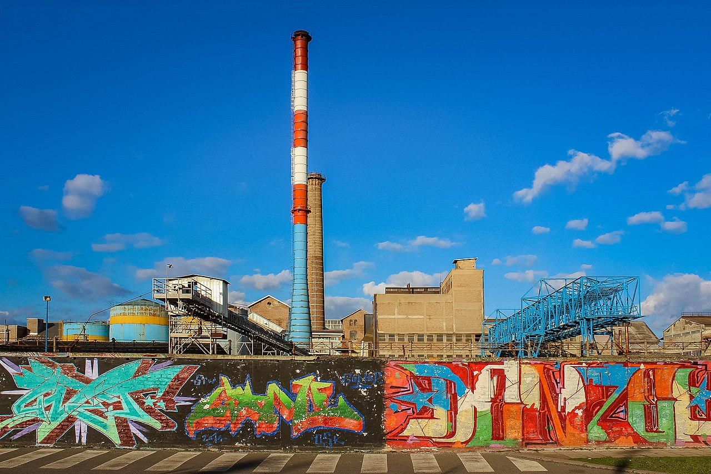

Upoznaj lege i legice, otkrij tko je čovjek tuljan, poželi voziti bicikl, okupaj se na Kopiki i popij Osječko pivo!
108.048 stanovnika (popis stanovništva iz 2011. godine)

Osijek je grad u istočnoj Hrvatskoj. Smješten je u ravnici na desnoj obali rijeke Drave između 16. i 24. kilometra od ušća u Dunav.
Najveći je grad u Slavoniji, četvrti po veličini grad u Hrvatskoj, te je industrijsko, upravno, akademsko, sudsko i kulturno središte Osječko-baranjske županije.
Osijek je grad s najviše zelenila i zelenih površina u Hrvatskoj; na području grada nalazi se 17 parkova u ukupnoj površini od 394.000 m².

Povijest grada
U starom vijeku ovdje se nalazio keltski te rimski grad Mursa. Ime Osijek nadjenuli su mu Hrvati, pošto su taj novi grad odlučili podići na "oseki" - povišenom suhom tlu iznad rijeke Drave, sigurnom od njenog hirovitog toka i čestih poplava. Srednji vijek u vrijeme Hrvatsko-ugarskog kraljevstva,
Osijek je proživio kao bogati trgovački i obrtnički gradić, a zatim su ga u ljeto 1526. osvojili vojnici moćnoga Osmanskog (Turskog) carstva.
Od kraja 17. stoljeća Osijek je vraćen Hrvatskoj u sastavu Habsburškog (Austro-ugarskog) carstva. Izgrađena je velika utvrda uz rijeku Dravu, grad se obnovio u baroknom stilu.
U 19. stoljeću, Osijek doživljava veliki gospodarski i kulturni procvat. Izgrađena je zgrada Hrvatskog narodnog kazališta, Županijska palača, Kon-katedrala Sv. Petra i Pavla, a u promet je pušten prvi tramvaj u široj regiji. Otvara se i niz drugih kulturnih ustanova te tvornica što privlači velik broj novih građana.
Gospodarstvo
Osijek je bio veliko hrvatsko industrijsko središte. Svojevremeno se moglo reći i da je bio industrijaliziraniji od Zagreba, a nazivalo ga se i hrvatskim Manchesterom. Brojne poznate hrvatske robne marke, počevši od sitnih potrebština u domaćinstvu, proizvode se u Osijeku.
U Osijeku je razvijena strojogradnja (poljodjelski strojevi), kemijska industrija (Saponia), konditorska industrija (Kandit, Karolina), šećerana (Tvornica šećera Osijek), proizvodnja piva (Osječko pivo) i dr. Poznata je bila tvornica žigica Drava koja je ugašena. Iako je nekada zastupljenost industrije bila mnogo veća zadnjih godina glavno obilježje grada je velika nezaposlenost mladih i duboka kriza gospodarstva.

Promet
Osijek se nalazi na međunarodnom prometnom koridoru Budimpešta-Sarajevo-Ploče. Usprkos tome što koridor nema autocestu cijelom svojom dužinom, Osijek je spojen na mrežu autocesta Hrvatske. Do njega se dolazi autocestom A5, tzv. Slavonikom. U Osijek se može doći željeznicom, koristeći usluge hrvatskih željeznica, te zračnim putem preko Zračne luke Osijek. Organizirani putnički riječni promet Dravom do Osijeka ne postoji.
Autobusne tvrtke Flixbus, Panturist, Polet, Autoprijevoz Požega, Croatiatrans i druge manje prijevozničke tvrtke prometuju do Osijeka, a gradski prijevoz obavlja Gradski prijevoz putnika Osijek. Osijek je jedini hrvatski grad osim Zagreba kojim prometuju tramvaji.
Arhitektura i znamenitosti
kino Urania i Sakuntala park
Pješački most tzv. Bijeli most
Tvrđa
hotel Osijek
konkatedrala sv. Petra i Pavla
Kultura
Osijek je najveće kulturno središte Slavonije i Baranje.
Prve kazališne predstave održavale su se u baroknom Osijeku još u 18. stoljeću, a prva kazališna zgrada, Hrvatsko narodno kazalište, sagrađena je 1866. godine. HNK je i danas najznačajnija kazališna ustanova u Slavoniji. Osim nje, u gradu djeluje i Dječje kazalište Branka Mihaljevića u Osijeku.
U Osijeku je i muzej od nacionalnoga značenja, Muzej Slavonije,[24] u zgradi bivšeg Gradskog magistrata u Tvrđi, gdje se čuvaju bogate zbirke predmeta vezanih za povijest Slavonije. Muzej posjeduje i bogatu arheološku zbirku, a smještena je u zgradi nekadašnje Glavne straže u Tvrđi, te se često, kolokvijalno, naziva arheološkim muzejom jer je nekadašnji osječki Arheološki muzej 2012. godine pripojen Muzeju Slavonije. Tim je činom osječki Arheološki muzej prestao djelovati s radom, a Muzej Slavonije preuzeo je sve nekretnine, imovinu, djelatnike, prava i obveze Arheološkoga muzeja.
U jednoj od bivših tvrđavskih vojarni, pisano blago slavonske povijesti čuva Državni arhiv u Osijeku. Od drugih muzejskih ustanova, tu je Muzej likovnih umjetnosti, u kojoj je vrijedna zbirka slikarstva od 18. do 20. stoljeća.
U gradu od nekadašnjih starih pet kino dvorana, preostala su samo dva, Kino Urania u povijesnoj secesijskoj zgradi, te Kino Europa.
Najveća knjižnica je Gradska i sveučilišna knjižnica Osijek.
Hrvatsko narodno kazalište u Osijeku
secesijski stil na Europskoj aveniji
Sport
Veći športski objekti u Osijeku su: Stadion Gradski vrt, Dvorana Gradski vrt, Športska dvorana Zrinjevac te Športska dvorana Jug. Među ostalima, tu su: gimnastička dvorana Sokolski dom, Gradski bazeni, Teniski centar Osijek, Atletski klub Slavonija žito, Streljana Pampas, Hipodrom Pampas (postoji od 1960.) te Rekreacijski centar Copacabana.
Tragovi športa nazočni su već u rimskoj Mursi, a povijest športa može se pratiti od 18. stoljeća. Zanimljivo je da se nogomet, danas najpopularniji šport u Osijeku, u Osijeku pojavio mnogo kasnije nego u drugim mjestima Hrvatske. Šport je u Osijeku bio vrlo raširen i visoke razine. Izbijanje Prvoga svjetskog rata postupno je ugasilo taj polet. Mobilizacija svih sposobnih preko ljeta te stavljanje sve športske infrastrukture na raspolaganje vojsci te banov dekret od 26. srpnja 1914. godine dovelo je do zamiranja športa.
Održavaju se natjecanje svjetskog kupa u športskoj gimnastici Grand prix Osijek (od 2009.) i festival urbane kulture i športa Pannonian Challenge (od 1999.) koji je 2016. bio dio FISE Svjetskog kupa. Od 2005. održava se Osječki Ferivi polumaraton. U dva navrata održao se Svjetski streljački kup u letećim metama. Održao se Svjetski padobranski kup u figurativnim skokovima.